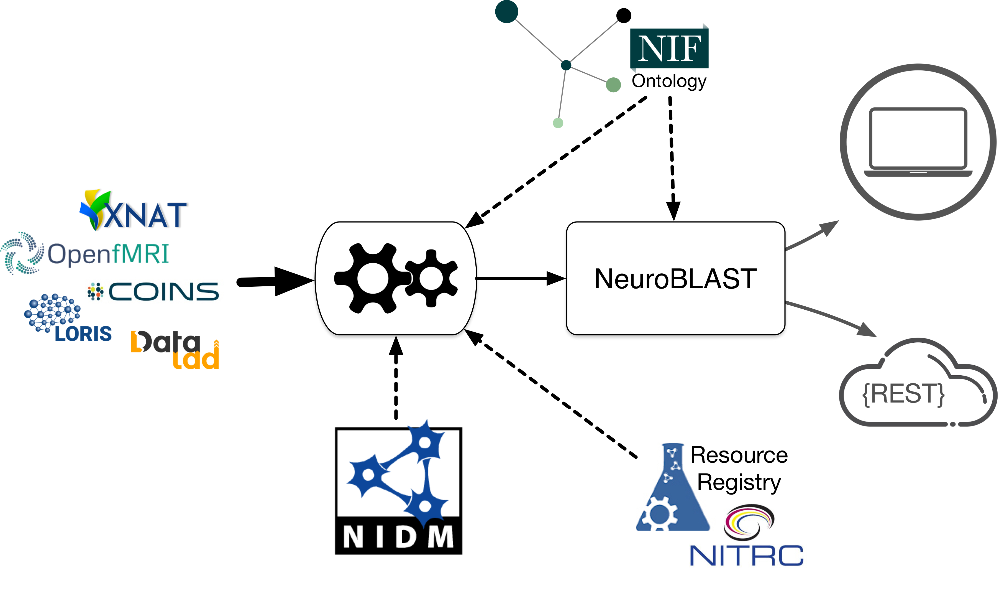

This project facilitates data sharing, use and discovery, by providing on-demand access (Discovery) for widely distributed web-based data, publication and software resources, with highly refined search tools. We are developing two broad classes of product:
ReproNim is developing an integrated application, NeuroBLAST, that will powerfully enable user-specified search and publish functions to data repositories, published studies, versioned software packages, study-related questions, and content. Included within the NeuroBLAST suite are terminology tools and services that enhance search, data annotation and integration, to help researchers make their data FAIR. We also provide a registry of neuroimaging tools and services to aid researchers in finding the tools they need for their research and to provide information on their use by provision and tracking Research Resource Identifiers (RRIDs).

The NeuroBlast service will allow users to find matching/similar studies based on a combination of task, analysis, and activation patterns. This novel environment will utilize all information about a study enabling researchers to find similar studies utilizing a number of different similarity metrics. This service will employ deep semantics to enhance the search for similar data sets utilizing multiple features for comparison.
InterLex is a dynamic lexicon of biomedical terms to help improve the way that scientists communicate about their data by helping them create and use FAIR vocabularies. FAIR vocabularies help information systems can find data more easily and provide more powerful means of integrating data across distributed resources. A primary goal of InterLex is to provide a stable layer on top of the many other existing terminologies, lexicons, and ontologies to provide a set of inter-lexical and inter-data-lexical mappings. Users can mint new vocabulary terms and link them to existing terminologies. User contributions to InterLex will also be incorporated into an Integrated Domain Ontology being developed by ReproNIM for neuroimaging.
The resource registry provides information on neuroimaging relevant research resources: data, information, and software. The registry works with domain providers, such as NITRC, to provide unique Research Resource Identifiers to enable resource citation and tracking in the literature. The registry provides services for resource owners to track who is using their resources. Through our research resource reports, researchers can discover useful tools, see who is using them, be alerted to any known issues and find other related tools.